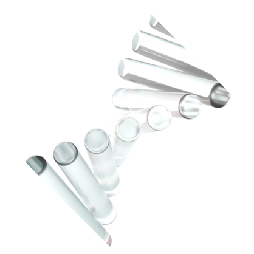

Proven in practice. A track record built over decades of GMP and regulatory delivery.
Our efficient operating model advances biosimilar programs and supports partners through approval and long-term supply.
1935
2019
Decades of GMP manufacturing, regulatory expertise, and global partnerships, built through Polpharma.

2013
2016
Entry into biologics, with dedicated R&D and development capabilities established to advance biosimilar programs
2019
First out-licensing agreements signed for biosimilar programs